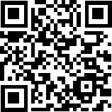
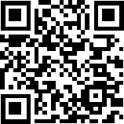

Cite As
Poelen, J.H. (2025) Trinity’s Institutional Repository in 2030. Zenodo. https://doi.org/10.5281/zenodo.16248158
License
CC BY 4.0. For license text, see https://creativecommons.org/licenses/by/4.0/.

a Roadmap in a National and European Open Science Context
Jorrit H. Poelen
2025-07-21

Poelen, J.H. (2025) Trinity’s Institutional Repository in 2030. Zenodo. https://doi.org/10.5281/zenodo.16248158
CC BY 4.0. For license text, see https://creativecommons.org/licenses/by/4.0/.
What is Open Science?
How does Trinity’s Institutional Repository (TARA) facilitate research today?
What are TARA’s goals for 2030, and how to get there?
“Open science is defined as an inclusive construct that combines various movements and practices aiming to make multilingual scientific knowledge openly available, accessible and reusable for everyone, to increase scientific collaborations and sharing of information for the benefits of science and society, and to open the processes of scientific knowledge creation, evaluation and communication to societal actors beyond the traditional scientific community.”1
c.1660 | Academic Journals Born
c.1960- | Rise of For-profit Academic Journals
c.1980- | Serials Crisis
2001 | Budapest Open Access Initiative
2016 | FAIR Principles
2018 | Plan S / cOAlition S
2022 | National Action Plan for Open Research 2
2030 | TARA Facilitates 100% Open Access at Trinity 3
Facilitate Scholarly Communication through Open Science
Gather, Share and Implement Data Management Best Practices
Track Socio-economic Benefits of Applied Open Science
Support Digital Publication Needs of the Research Community
Foster Collaboration within Ireland and Beyond
Improve, Align, and Connect Digital Infrastructures
Socialize through Workshops, Courses, Events and Being Around (Social Infrastructure!)
Facilitate Scholarly Communication through Open Science
Gather, Share and Implement Data Management Best Practices
Track Socio-economic Benefits of Applied Open Science
Support Digital Publication Needs of the Research Community
Foster Collaboration within Ireland and Beyond
Improve, Align, and Connect Digital Infrastructures
Socialize through Workshops, Courses, Events and Being Around (Social Infrastructure!)
Facilitate Scholarly Communication through Open Science
Gather, Share and Implement Data Management Best Practices
Track Socio-economic Benefits of Applied Open Science
Support Digital Publication Needs of the Research Community
Foster Collaboration within Ireland and Beyond
Improve, Align, and Connect Digital Infrastructures
Socialize through Workshops, Courses, Events and Being Around (Social Infrastructure!)
What is Open Science?
How does Trinity’s Institutional Repository (TARA) facilitate research today?
What are TARA’s goals for 2030, and how to get there?
TARA Institutional Repository at Trinity College Dublin https://www.tcd.ie/library/riss/tara/
(Irish) National Open Research Forum (NORF). (2022). National Action Plan for Open Research. https://doi.org/10.7486/DRI.ff36jz222
Plan S / cOAlition S https://www.coalition-s.org/
Wilkinson, et al. (2016). The FAIR Guiding Principles for scientific data management and stewardship. Sci Data. https://doi.org/10.1038/sdata.2016.18
Budapest Open Access Initiative https://www.budapestopenaccessinitiative.org
For questions/comments/ideas, please do reach out to:
Jorrit H. Poelen
UNESCO. (2021). UNESCO Recommendation on Open Science. https://unesdoc.unesco.org/ark:/48223/pf0000379949.locale=en↩︎
National Open Research Forum (NORF). (2022). National Action Plan for Open Research. doi:10.7486/DRI.ff36jz222↩︎
Where possible and as aligned with adopted national and international frameworks.↩︎